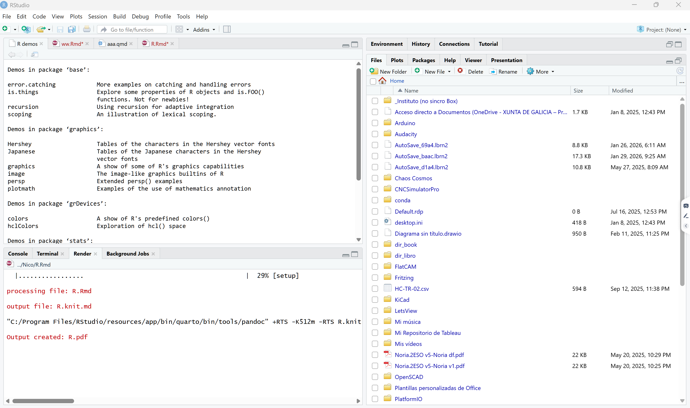
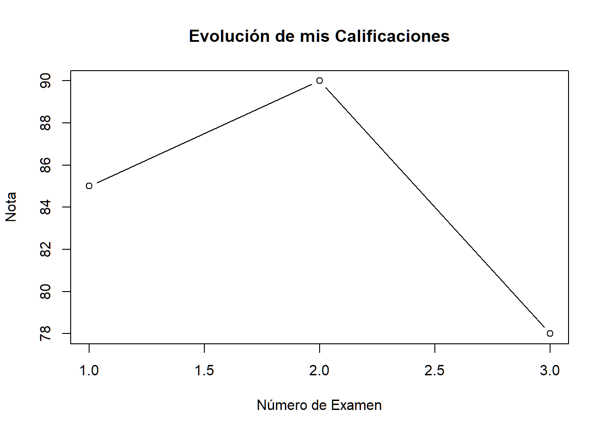
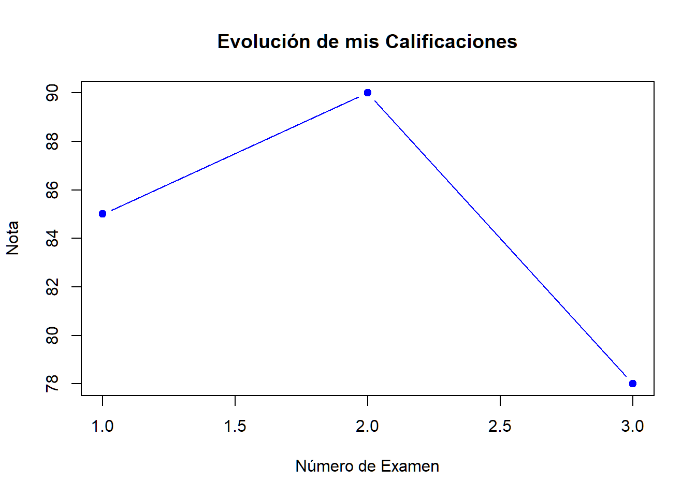

R para economistas
Alberto R. Durán Pérez
2026-03-07
1 Introducción: ¿Qué es R y por qué es útil en Economía?
- R es un lenguaje de programación muy potente diseñado específicamente para el análisis estadístico y la visualización de datos. Es el estándar en muchas áreas científicas y de negocios.
Para profundizar en la introducción de R aplicada a la Economía, es necesario entender que no estamos ante una simple calculadora, sino ante un laboratorio completo de econometría.
R es un lenguaje de código abierto diseñado específicamente para el análisis estadístico y la visualización de datos. En el ámbito económico, su utilidad radica en que se ha convertido en el estándar tanto en áreas científicas como en el mundo de los negocios.
1.1 ¿Por qué R es el aliado del economista?
A diferencia de las hojas de cálculo tradicionales, R permite manejar grandes volúmenes de datos y asegurar la reproducibilidad. Si realizas un análisis hoy, cualquier otra persona puede ejecutar tu código y obtener exactamente los mismos resultados, algo vital en la investigación económica.
Haciendo un símil con un coche para entender las herramientas:
R (El Motor): Es la potencia bruta que realiza los cálculos matemáticos y estadísticos. Sin él, no hay movimiento.
RStudio (El Volante y Tablero): Es el entorno de desarrollo (IDE) que hace que escribir código sea una experiencia mucho más amigable, visual y cómoda. Es la interfaz que te permite controlar el motor sin complicaciones innecesarias.
1.2 Áreas de aplicación en Economía
- Econometría: Estimación de modelos de regresión lineal y no lineal, series temporales y paneles de datos.
- Análisis de Políticas Públicas: Evaluación de impacto mediante la manipulación de microdatos (como censos o encuestas de hogares).
- Visualización de Datos: Creación de gráficos de alta calidad para reportes financieros o académicos.
- Automatización: Generación de informes automáticos mediante RMarkdown para combinar análisis y resultados en un solo paso.
EL proceso de trabajo con R está enfocado en el uso de tres herramientas:
R, es el motor del lenguaje (hace los cálculos necesarios).
RStudio, aplicación que facilita la programación en R.
RMarkdown, aplicación incluida en RStudio que permite presentar los resultados de forma atractiva visualmente.
¡Recuerda bien estos tres nombres!
Esta base sólida es el primer paso del camino, que hemos dividido en tres etapas lógicas: el taller (instalación), el lenguaje (sintaxis) y la publicación (RMarkdown).
1.3 El “taller”: Instalación y configuración
Para trabajar cómodamente, normalmente no usamos R “a secas”, sino que lo combinamos con RStudio, que es un entorno de desarrollo (IDE) que hace que escribir código sea mucho más amigable.
En esta sección, aprenderás a preparar tu equipo de trabajo. Los puntos clave a incluir son:
Instalación dual: Deben instalar primero R y luego RStudio.
Interfaz de RStudio: Es necesario conocer para qué sirve cada ventana del programa para que los usuarios se sientan orientados desde el primer momento.
Veamos las instalación tanto en Windows como en Mac. El proceso es muy similar, pero los archivos de instalación del “motor” (R) son distintos.
Vamos a instalar primero el motor (R). Recuerda: sin esto, RStudio no funcionará.
Paso 1: Instalar R (El Motor)
Ve al sitio oficial llamado CRAN (Comprehensive R Archive Network). Aquí es donde vive R.
- Para Windows:
-
Entra en:
cran.r-project.org/bin/windows/base/Haz clic en el enlace grande que dice “Download R [versión] for Windows”.
Ejecuta el archivo
.exey acepta todo por defecto (Siguiente, Siguiente…).
- Para Mac:
-
Entra en:
cran.r-project.org/bin/macosx/Aquí hay una pequeña bifurcación importante:
Si tu Mac tiene chip Apple (M1, M2, M3…), descarga el archivo que dice
arm64.pkg.Si es una Mac más antigua con chip Intel, descarga el archivo que dice
x86_64.pkg.
Instala el archivo
.pkgcomo cualquier otra aplicación de Mac.
Paso 2: Instalar RStudio (El Tablero)
Una vez que el motor está instalado en ambos equipos, vamos por el tablero de control.
Ve al sitio de Posit (los creadores de RStudio):
posit.co/download/rstudio-desktop/Desplázate hacia abajo hasta encontrar el botón “Download RStudio Desktop for…” (la página suele detectar tu sistema automáticamente).
Instálalo (en Mac arrastrándolo a Aplicaciones, en Windows con el instalador).
1.3.1 Verificación
Cuando termines, no abras el icono de “R”. Busca y abre únicamente el programa RStudio.
Deberías ver una ventana dividida en paneles (generalmente 3 o 4). ¿Pudiste abrir RStudio correctamente y ver algo parecido a esto?

1.4 Sintaxis: primeros pasos básicos
¡Excelente! Si ya tienes RStudio abierto, deberías
ver una interfaz dividida en cuadrantes. Por ahora, lo más importante es
que localices la Consola (Console), que suele ser el
panel grande a la izquierda o abajo a la izquierda donde aparece un
símbolo de mayor que >. Ahí es donde R espera tus
órdenes.
Vamos a empezar a “hablar” con R para entender cómo maneja la información. En R, casi todo se basa en Variables y Funciones.
1.4.1 Variables y Asignación 📥
Para guardar un dato y usarlo después, usamos el
operador de asignación <- (flecha hacia la izquierda u
guión medio). Podemos asemejarlo a una caja de mudanzas con una etiqueta
(caja con 10 libros, caja = 10).
mi_edad <- 25
# (Guardamos el número 25 en la variable "mi_edad").
nombre <- "Alex"
# (Guardamos texto, que siempre va entre comillas).
cantidad = 1271.4.2 Vectores: Las listas de R 🧱
R no solo maneja números sueltos; su especialidad son las
listas de datos del mismo tipo, llamadas
Vectores. Se crean con la función c() (de
combinar).
precios <- c(10, 15, 20, 25)
nombres <- c("Ana", "Luis", "Marta")Para ver si el motor está bien aceitado, intentemos un ejercicio rápido en tu consola. Imagina que tienes las notas de tres exámenes: 8, 7.75 y 6.50.
¿Cómo escribirías el código para crear un vector (lista) llamado
mis_notasque contenga esos tres números? (Pista: usa la funciónc()).
¡Muy bien! Vamos a poner a prueba ese motor.
En la Consola, escribe la siguiente línea y presiona Enter:
mis_notas = c(8, 7.75, 6.50)Si lo hiciste bien, notarás que en el panel superior derecho (llamado
Environment) ahora aparece mis_notas. R ya
lo tiene en su memoria.
1.4.2.1 Operaciones Vectorizadas ⚡
Lo mejor de R es que puedes hacer cálculos con toda la lista de datos a la vez. No necesitas sumar uno por uno. Por ejemplo, si el profesor decide regalar 2 puntos a todos por buena conducta, solo tienes que escribir:
mis_notas + 2## [1] 10.00 9.75 8.50R le sumará 2 a cada número del vector automáticamente.
1.4.3 Tu turno: El Desafío del Promedio 📈
R tiene funciones integradas para casi todo. La función para calcular
el promedio (o media aritmética) se
llama mean().
¿Cómo intentarías calcular el promedio de tu vector
mis_notas usando esa función? (Pista: Pon el
nombre de tu vector dentro de los paréntesis).
mean(mis_notas)## [1] 7.416667¡Exacto! Esa es la forma de “llamar” a una función en R. Si ejecutas
mean(mis_notas), R te devolverá el promedio exacto de esos
tres valores.
Ahora que ya sabes cómo darle órdenes básicas a R, vamos a subir de nivel. Hasta ahora hemos escrito código directamente en la Consola, pero eso tiene un problema: cuando cierras el programa, el código desaparece.
Para trabajar como un profesional, usamos R Markdown.
1.5 La publicación: ¿Qué es R Markdown?
R Markdown es un formato de archivo que te permite mezclar tres elementos en un solo lugar:
Texto normal (para explicar lo que haces).
Código de R (para hacer los cálculos).
Resultados (gráficas y tablas que se generan automáticamente).
Eto te permitirá presentar los resultados de tus análisis de forma más atractiva, e incluso, exportarla a muchos formatos de documentos como HTML, PDF, Word, …, o formatos de presentaciones como Power Point, Slidy, Beamer…
Puedes encontrar más información en https://rmarkdown.rstudio.com/
1.5.1 Cómo crear tu primer documento
En RStudio, ve a File -> New File -> R Markdown…
Ponle un título (por ejemplo: “Mi Primer Análisis”) y haz clic en OK.
Se abrirá un archivo con un texto de ejemplo. Verás unas cajas grises que empiezan con
```{r}. Esas cajas se llaman Chunks (trozos de código).
1.5.1.1 Tu primera misión en R Markdown
Busca un botón en la parte superior que tiene un icono de una pequeña madeja de lana y dice Knit (tejer) 🧶. Al presionarlo, RStudio “tejerá” todo tu código y texto para crear un archivo HTML o PDF profesional.
¿Qué pasa cuando intentas presionar ese botón de “Knit” por primera vez? (A veces RStudio te pedirá instalar unos paquetes adicionales antes de continuar).
Es muy común que la primera vez que presionas Knit
🧶, RStudio te muestre un mensaje en la parte superior diciendo que
faltan algunos “paquetes” (como knitr,
rmarkdown o tinytex). Si te aparece un botón
que dice Install, dale clic sin miedo; son las
herramientas que R necesita para traducir tu código a un documento
bonito.
Una vez que el proceso termina, se abrirá una ventana nueva con tu documento terminado. Lo que acabas de hacer es “renderizar” el archivo.
1.5.2 La estructura de un R Markdown 📝
Para que seas un experto en esto, debes distinguir las tres partes de
un archivo .Rmd:
- El Encabezado (YAML): Está al principio entre
líneas
---. Aquí defines el título, el autor y si quieres un HTML, PDF o Word. - El Texto: Se escribe fuera de las cajas grises. Puedes usar formato simple:
**negrita**# Título## Subtítulo
- Los Chunks (Código): Son las cajas grises que
empiezan con ```
{r}. Todo lo que escribas ahí dentro será ejecutado por el motor de R.
1.5.3 Vamos a personalizarlo 🛠️
Busca en tu archivo de ejemplo una de esas cajas grises (chunks). Borra lo que tiene adentro y escribe el código que usamos antes:
mis_notas <- c(85, 90, 78)
mean(mis_notas)## [1] 84.33333Ahora, vuelve a presionar Knit. Verás que en tu documento final aparece tanto el código como el resultado del promedio justo debajo.
¿Qué te parece el resultado? ¿Te gustaría intentar crear una gráfica sencilla dentro de ese mismo documento para ver cómo se incluye automáticamente?
1.6 Visualización de los datos
¡Excelente! Ya tienes tu primer documento “vivo” donde el código y la explicación conviven. 📝✨
Para que tu reporte pase de ser una lista de números a un análisis real, vamos a añadir una gráfica. R es famoso por su capacidad de visualización.
1.6.1 Gráficas instantáneas 📈
En R, existe una función básica llamada plot(). Si le
pasas un vector de números, R entenderá que quieres ver cómo se
distribuyen.
Intenta añadir esto en un nuevo chunk (una nueva caja gris de código) dentro de tu archivo R Markdown:
plot(mis_notas,
type = "b",
main = "Evolución de mis Calificaciones",
xlab = "Número de Examen",
ylab = "Nota")
1.6.1.1 Entendiendo los argumentos
Fíjate que dentro de los paréntesis no solo pusimos los datos, sino también “instrucciones” extra:
type = "b": Crea una gráfica de puntos y líneas (both).main: El título principal.xlab/ylab: Etiquetas para los ejes X e Y.
1.6.2 El toque final: Personalización
R Markdown te permite decidir cómo
se ve ese código en el informe final usando opciones dentro de las
llaves del chunk {r}.
Por ejemplo, si quieres que la gráfica aparezca en tu PDF/HTML, pero
no quieres que se vea el código “feo” que la generó, puedes usar
echo = FALSE.
¿Te gustaría que probemos a cambiar el color de la gráfica o prefieres que veamos cómo organizar mejor el texto con títulos y subtítulos en el documento?
¡Excelente! Vamos a darle un poco de color y estructura a ese documento. 🎨
Para cambiar el color de la gráfica, usamos el argumento
col. R reconoce nombres de colores básicos en inglés (como
"blue", "red", "darkgreen",
etc.).
1.6.2.1 Personalizando la gráfica 🖌️
Modifica el código de tu chunk así:
plot(mis_notas,
type = "b",
col = "blue", # Cambia el color a azul
pch = 19, # Cambia el estilo del punto a uno sólido
main = "Evolución de mis Calificaciones",
xlab = "Número de Examen",
ylab = "Nota")
1.6.2.2 Estructurando el texto con Markdown 📝
Fuera de las cajas grises, puedes organizar tu explicación usando niveles de títulos. Esto es muy importante para que el documento final tenga un índice y sea fácil de leer. Pruébalo escribiendo esto en el área de texto:
# Reporte del Semestre
Este es mi primer análisis automático usando **R Markdown**.
## Análisis de Exámenes
A continuación, se muestra el promedio y la tendencia de mis notas.Al presionar Knit 🧶, verás que el texto se convierte en títulos grandes y pequeños, y la gráfica aparecerá con el nuevo color.
1.6.3 ¿Qué sigue en nuestro aprendizaje? 🚀
Ahora que ya sabes instalar, escribir código básico y generar un reporte, podemos profundizar en lo que más te interese:
- Manipulación de Datos: Aprender a usar
Data Frames(tablas como las de Excel) y filtrarlas. - Gráficas Avanzadas: Introducción a
ggplot2, la librería estándar para hacer gráficos de nivel profesional. - Configuración de RMarkdown: Aprender a ocultar el código, cambiar el formato a PDF o añadir tablas automáticas.
¿Cuál de estos caminos te llama más la atención para continuar?
2 ¿Y ahora qué?
Hay muchos recursos en Internet para seguir avanzando en el estudio de R. pero entre ellas hay uno destacado que es seguir el curso Swirl. Este curso está diseñado para seguirlo dentro de RStudio.
2.1 Curso Swirl
Este curso inicialmente se diseñó en inglés, pero actualmente se encuentra traducido al español por José Rosa (swirl_español). Para seguirlo en RStudio necesitamos instalar en él un par de cosas.
2.1.1 Crear carpeta
Instalación del curso Swirl en español.
Abre el programa RStudio
Crea una carpeta en en la que instalar el curso.
 Crear carpeta
Crear carpeta¡Importante! Asegúrate que lo que vas a escribir en la Consola de RStudio se haga dentro de esta carpeta.
Para ello, haz clic en el icono de engraje y selecciona
Set as working directory.Asegúrate de que estás trabajando en esta carpeta yendo a la Consola de RStudio y escribiendo
getwd()y pulsando ENTER. getwd()
getwd()
2.1.2 Instalar curso
Instala el paquete del curso dede la misma Consola de RStudio, escribiendo:
install.packages("swirl")A continuación:
library(swirl)Por último:
install_course_github('josersosa','Programando_en_R')
2.1.3 Inicializar el curso
Cada vez que quieras seguir el curso debes escribir esto:
- Escribe:
swirl()
Al comienzo nos solicita un nombre para identificarnos y almacenar los avances que hagamos en el caso que deseemos pausar el curso. Si introducimos n todas las sesiones el mismo nombre, el curso se abrirá donde lo dejamos anteriormente.
Las primeras informaciones estan en ingles porque provienen del
paquete swirl. Luego seleccionamos el curso Programando en
R y a partir de ahí todo lo esencial estará traducido. Las
últimas versiones de swirl incluyen una función para seleccionar el
idioma, que pdemos utilizar para que los mensajes del sistema estén en
español: select_language(language = "spanish").
El curso está nombrado como 1. Programando en R que tiene 15 capítulos. Al principio cuesta un poco recorrer los menús.
 Los 15 capítulos del curso
Los 15 capítulos del curso